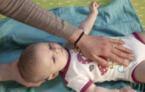

La méthode Feldenkrais pour les enfants
La technique Feldenkrais s'applique à tout enfant ayant des difficultés. Cette pratique peut permettre à l'enfant de dépasser des limitations d'ordre neurologiques ou génétiques.
La praticienne au cours des séances lui permet de réintégrer un mode d'apprentissage propre à générer une croissance plus complète. Il peut aussi répondre à une difficulté de développement spécifique. Ces enfants à besoin spécifique ou ayant des diagnostiques de troubles envahissants du développement peuvent trouver dans la méthode Feldenkrais un moyen qui répond à leur besoin. Il en va de même pour tout enfant ayant subi un traumatisme physique.
Tout simplement une difficulté quelle qu'elle soit implique chez l'enfant une difficulté fonctionnelle et une répercussion sur la motricité ou l'expression. La méthode Feldenkrais travaille sur l'intégration fonctionnelle et sur le rôle qu'a la prise de conscience du mouvement dans le développement neurologique. La praticienne peut y répondre d'une manière appropriée et collabore souvent avec d'autres praticiens ou thérapeutes dans l'intérêt de l'enfant.
Le fondateur de la méthode
Moshe Feldenkrais est le créateur de la méthode qui porte son nom. Docteur en sciences physiques, ingénieur, il est également l'une des premières ceintures noires de judo en France.
Durant les années 40, Moshe Feldenkrais effectue des recherches pour remédier à une blessure grave au genou. Ces recherches seront le point de départ de sa méthode. Ses connaissances en sciences, en judo et l'observation du développement neuro-physiologique des enfants en sont les éléments d'origine.
Il se consacre exclusivement à l'enseignement de sa méthode à partir des années 50, ceci en Europe, au Moyen-Orient et aux États-Unis.